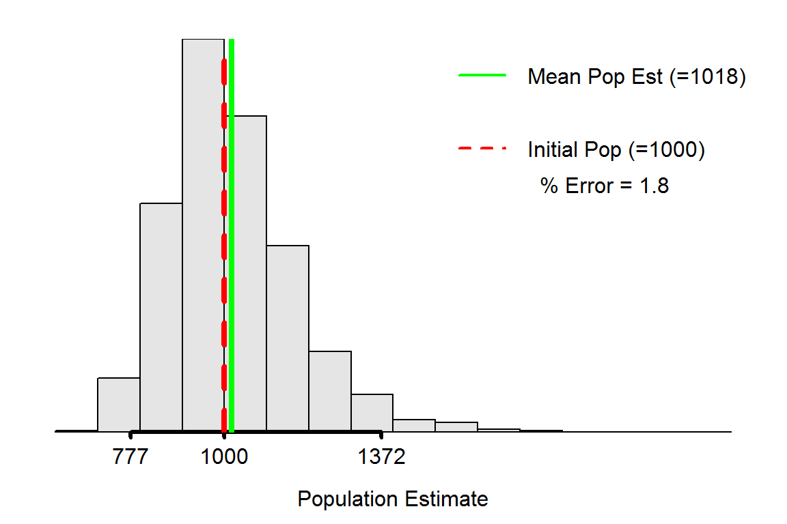

Understanding the Bias of Petersen Estimates
 Estimating the number of fish in a population is one of the most common tasks facing a fisheries biologist. One common method for estimating fish abundance is to sample the population, mark (or tag) and return the sampled fish to the population, take a second sample from the population, and use the ratio of number of marked to unmarked fish to estimate the population size. The most common formula for estimating abundance in this situation was derived nearly simultaneously by Petersen and Lincoln, though slight modifications to the formulas were derived by Chapman and Bailey. Taken together, these methods are called the “Petersen family” of mark-recapture methods. In this exercise, you will use simulations to assess how accurately the original Petersen and the Chapman modification estimate population abundance.
Estimating the number of fish in a population is one of the most common tasks facing a fisheries biologist. One common method for estimating fish abundance is to sample the population, mark (or tag) and return the sampled fish to the population, take a second sample from the population, and use the ratio of number of marked to unmarked fish to estimate the population size. The most common formula for estimating abundance in this situation was derived nearly simultaneously by Petersen and Lincoln, though slight modifications to the formulas were derived by Chapman and Bailey. Taken together, these methods are called the “Petersen family” of mark-recapture methods. In this exercise, you will use simulations to assess how accurately the original Petersen and the Chapman modification estimate population abundance.
Simulation Description
The mrClosed1Sim() function in the FSAsim package may be used to evaluate the performance of the Petersen family of mark-recapture methods to estimate population abundance. This function works by creating an initial population for which abundance is known. A sample of fish is then taken from this population according to choices made by the user (discussed below). The individuals in this sample are then “marked” and returned to the population. A second sample is then taken and the number of previously marked fish is counted. From these results an estimate of population abundance is computed according to the Petersen family method selected by the user. This process is then repeated a large number of times so that the sampling distribution of the population abundance estimate can be visualized.
The mrClosed1Sim() function takes three arguments:
sim=is used to select the type of simulation to use. Usesim="distribution"(used on this page) to assess characteristics of the sampling distribution of the population abundance estimate. Usesim="assumptions"(used on the next pages) to assess the effect of assumptions violations on the population abundance estimate.N=is the known initial population size (default isN=1000).rsmpls=is the number of simulations to run for each scenario (default isrsmpls=2000).
After calling the function with sim="distribution", a histogram will appear for the estimated population abundance for each of the rsmpls simulations. The histogram is augmented with a red vertical line at the known initial abundance (N) and a green vertical line at the mean estimated abundance from all rsmpls runs. The histogram is also labeled with the percentage error of the mean abundace estimate from the known abundance (positive numbers mean that the known abundance was overestimated, on average).
> mrClosed1Sim(sim="distribution")
For example, the plot above shows that the sampling distribution for the population abundance estimates is right-skewed. In addition, the abundance estimate is biased because the mean abundance estimate is greater than the known initial abundance (the green line is greater than the red line). The bias is an overestimate of 1.8%. In addition, an approximate 95% confidence interval for the abundance estimate is from 777 to 1372 (as shown on the x-axis).
In RStudio, this plot will have a gear icon in the upper-left corner that will open a dialog box that allows you to change the estimation Method (default is Petersen), expected number of fish to tag on the first sample (Marked (M) slider), and the expected number of fish to capture on the second sample (Captured (n) slider). Moving a slider or pressing the Rerandomize button will force another set of rsmpls to be constructed.
Questions I – Biases?
Each simulation scenario below should be based on a known population size of N=1000 individuals (the default), an expected number of marks of 200, and an expected number in the second sample of 200. Once the sliders have been set at the requested levels, the Rerandomize button should be pressed several times to ensure that any conclusions that you draw are not based on the results of a single set of random simulation runs.
- Does the Petersen method under, over, or accurately estimate the initial population abundance?
- Does the Chapman modification method (need to change the “Method” choice) under, over, or accurately estimate the initial population abundance?
- Do your answers to the previous two questions change with (a variety of) other expected numbers of marked fish and second sample sample sizes? [i.e., do your conclusions about the Petersen and Chapman methods generalize to “all” sample sizes?]
- What main conclusion can you make from your answers to these three questions?
Questions II – Sampling Distribution
Describe the shape of the sampling distribution of the abundance estimate, bias percentage, and width of the approximate confidence interval for each combination of expected number of marks and expected number in the second sample between 100 and 400 in increments of 50. Each simulation should be based on a known population size of N=1000 individuals (the default) and use the Chapman modification method (not the default). Make sure to rerandomize and record a general result (especially for percent bias). Use your results to answer the questions below. [Hint: You might want to record your observations in a two-way table with expected number of marks as rows and expected number in the second sample as columns.]
- Describe any obvious patterns in your observations of the percentage bias.
- Were there any combinations of values that produced an approximately normal sampling distribution? How does this relate to the general rules for computing confidence intervals for population abundance discussed in the readings?
- What happened to the width of the confidence interval as the size of the first sample increased (and the size of the second sample was held constant)?
- What happened to the width of the confidence interval as the size of the second sample increased (and the size of the first sample was held constant)?
- Suppose that you could only handle a total of 500 fish in the two days of sampling. How should you apportion your effort (expected numbers of fish on the two days) to obtain the most precise (narrowest confidence interval) estimates of population abundance? Does this conclusion generalize to other total sample sizes (e.g., 300 or 400 total fish on the two days)?
- What assumptions about field work (i.e., catching and tagging fish) is being made in the previous question? Is this realistic? Explain. How would you incorporate a more realistic scenario into determining how to apportion your effort.